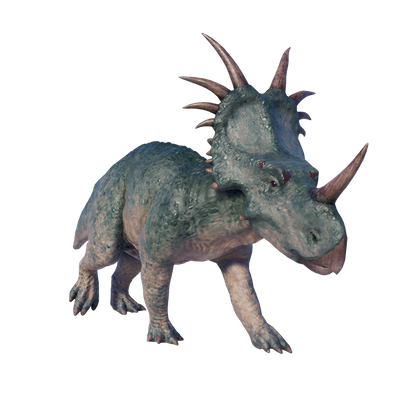

Useful Website
Measuring 5.1m in length and weighing almost 2 tonnes, Styracosaurus is a large herbivorous dinosaur that lived in the Cretaceous Period. Styracosaurus is from the ceratopsian family of dinosaurs, with a single horn protruding from its snout and a large neck frill featuring lengthy spines that give it its name, which translates into ‘Spiked Lizard’.
